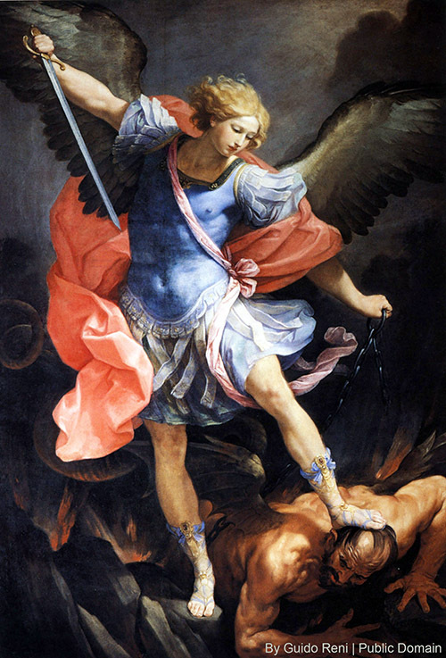
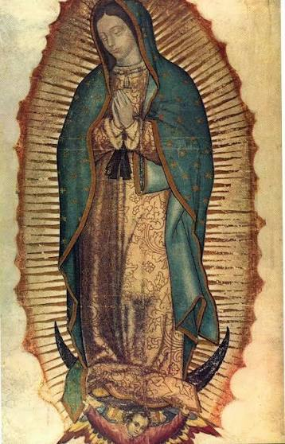
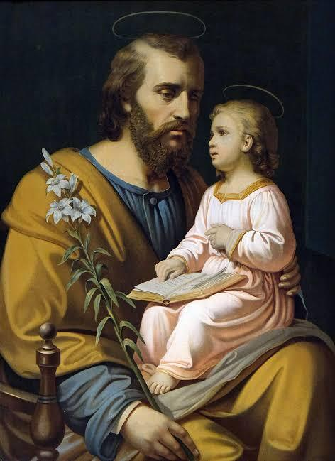
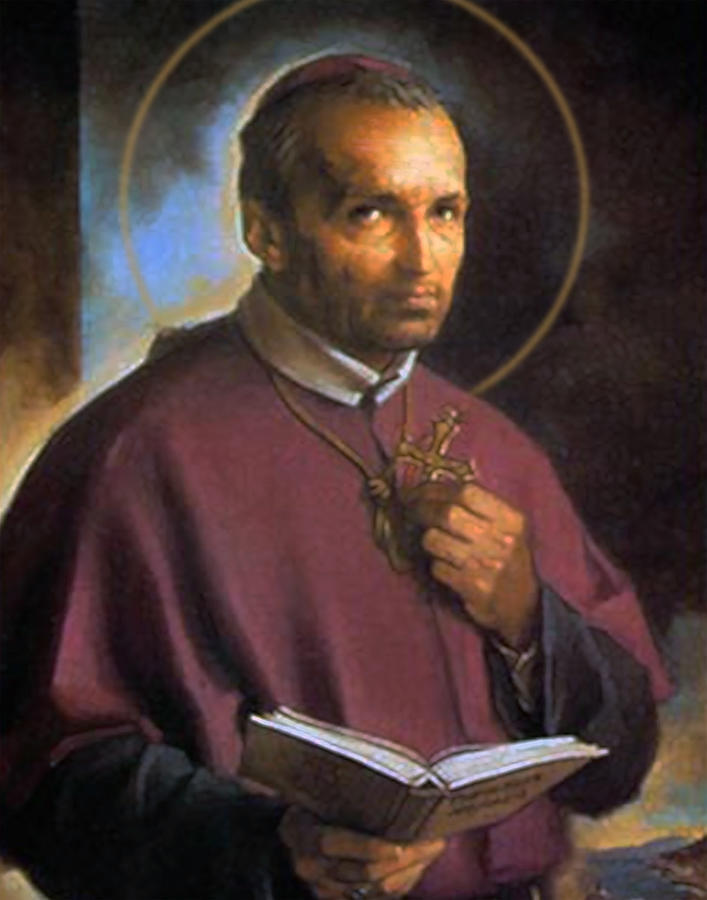
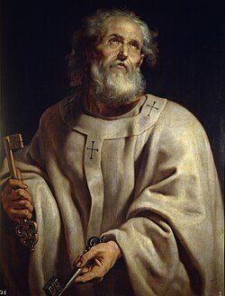
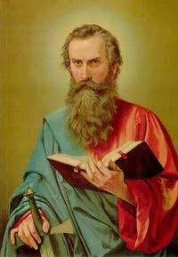
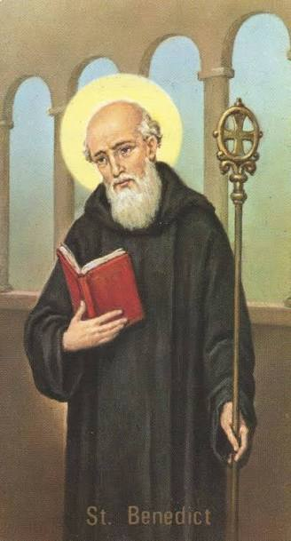
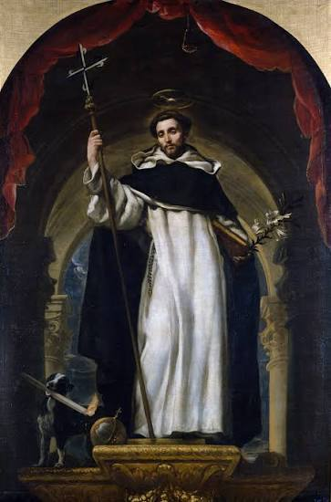

Office Of Exorcism
St. Michael the Archangel Parish
Quis ut Deus?
Traditional Roman Catholic
Spiritual & Healing Ministry
Preserving Sacred Scripture,
Sacred Tradition,
Catholic Books,
and Historical Church Documents.
Quis ut Deus?
Traditional Roman Catholic
Spiritual & Healing Ministry
Preserving Sacred Scripture,
Sacred Tradition,
Catholic Books,
and Historical Church Documents.
The lives, virtues, and witness of the Saints who shaped Catholic Tradition through the ages.

Title: Prince of the Heavenly Host, Archangel
Feast Day: September 29
Patronage: The Church, soldiers, police officers, exorcists, protection against evil
Named in Sacred Scripture as the leader of the angelic armies who cast Satan and the fallen angels out of Heaven, St. Michael is honored as the great defender of the Church and the faithful. His name, "Quis ut Deus" ("Who is like unto God?"), stands as the eternal rebuke to the pride of Lucifer and the motto of this ministry.
Biography
Title: Mother of God (Theotokos), Queen of Heaven
Feast Day: January 1 (Solemnity of Mary, Mother of God)
Patronage: The universal Church, mothers, purity, all humanity
Chosen by God from all eternity to be the Mother of the Incarnate Word, Mary's perfect fiat at the Annunciation made her the model of faith and obedience for every Christian. Declared Theotokos at the Council of Ephesus, she is honored under countless titles and remains the greatest of all the Saints.
Biography
Title: Foster Father of Jesus, Patron of the Universal Church
Feast Day: March 19 (Solemnity); May 1 (St. Joseph the Worker)
Patronage: The Universal Church, fathers, workers, a happy death, families
A humble carpenter of the House of David, Joseph was entrusted with the guardianship of the Christ Child and the Blessed Virgin. His silent obedience to God's will, shown through his acceptance of Mary and his flight into Egypt to protect the infant Jesus, marks him as the model of quiet, faithful fatherhood.
Biography
Years: 1696–1787 AD
Title: Bishop, Founder of the Redemptorists, Doctor of the Church
Feast Day: August 1
Patronage: Confessors, moral theologians, arthritis sufferers
Major Works:
Founder of the Redemptorist order and a tireless preacher to the poor and abandoned, St. Alphonsus is remembered above all for his Marian writings and his gentle, merciful approach to moral theology, which shaped Catholic pastoral practice for centuries.
Biography
Years: 1225–1274 AD
Title: Priest, Doctor of the Church ("Doctor Angelicus")
Feast Day: January 28
Patronage: Students, theologians, philosophers, Catholic schools
Major Works:
A Dominican friar and the greatest of the Scholastic theologians, St. Thomas united faith and reason into a single, coherent vision of truth. His Summa Theologica remains the foundation of Catholic philosophy and theology to this day.
Biography
Title: Prince of the Apostles, First Pope
Feast Day: June 29 (with St. Paul); February 22 (Chair of St. Peter)
Patronage: The Papacy, fishermen, the Universal Church
A Galilean fisherman called personally by Christ, Peter was given the keys of the Kingdom of Heaven and named the rock upon which the Church would be built. Despite his denial of Christ during the Passion, his repentance and later martyrdom in Rome established him as the first Pope and head of the Apostles.
Biography
Title: Apostle to the Gentiles
Feast Day: June 29 (with St. Peter); January 25 (Conversion of St. Paul)
Patronage: Missionaries, evangelists, writers, theologians
Major Works:
Once a persecutor of Christians, Saul of Tarsus was dramatically converted on the road to Damascus and became the great Apostle to the Gentiles. His missionary journeys and epistles laid the theological foundation for much of the New Testament and the early Church.
Biography
Years: 480–547 AD
Title: Abbot, Father of Western Monasticism
Feast Day: July 11
Patronage: Europe, monks, students, against poison
Major Works:
Founder of the monastery at Monte Cassino, St. Benedict wrote the Rule that would become the foundation of Western monastic life, balancing prayer, work, and community under the motto "Ora et Labora" (Pray and Work).
Biography
Years: 1181–1226 AD
Title: Deacon, Founder of the Franciscan Order
Feast Day: October 4
Patronage: Animals, ecology, merchants, Italy
Born to a wealthy merchant family, Francis renounced all worldly goods to live a life of radical poverty and love for Christ. He founded the Franciscan Order and received the Stigmata, the wounds of Christ, becoming one of the most beloved Saints for his humility and love of creation.
Biography
Years: 1170–1221 AD
Title: Priest, Founder of the Order of Preachers (Dominicans)
Feast Day: August 8
Patronage: Astronomers, the Dominican Order, preachers
Founder of the Order of Preachers, St. Dominic dedicated his life to combating heresy through sound doctrine, preaching, and prayer. He is traditionally credited with popularizing the Holy Rosary as a spiritual weapon for the defense and spread of the Catholic Faith.
Biography